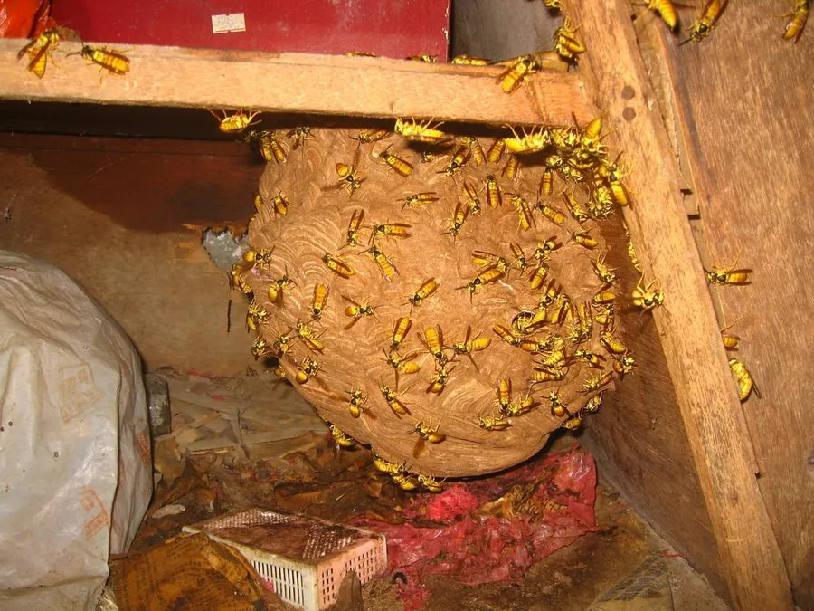

昆虫 · 动物界
黑盾胡蜂 Vespa bicolor

中胸背板黑色、腹部鲜黄带黑环的中型胡蜂，筑巢于树枝与屋檐，捕食其他昆虫，蜇刺疼痛且有过敏风险。
- 分类
- 门节肢动物门纲昆虫纲目膜翅目科胡蜂科属胡蜂属
- 栖息环境
- 阔叶林、果园、村落和城市绿地，巢筑于树枝或屋檐
- 地理分布
- 中国南方，以及南亚和东南亚
- 保护级别
- 尚无保护级别；为常见的捕食性胡蜂，接触蜂巢有蜇刺风险
物种志
黑盾胡蜂的体长约二至二点五厘米，体色鲜明，头部黄色，中胸背板黑色，形成一个明显的黑色盾片，黑盾胡蜂之名由此而来，腹部鲜黄色，各节后缘有黑色环带，翅呈淡褐色。它的上颚发达，呈钳状，用来咬碎猎物和刮取木质纤维筑巢，雌蜂腹部末端有发达的螫针，连接毒囊。工蜂与蜂王的体型差别不大，蜂王略大。
它分布于中国南方、南亚和东南亚，栖息在阔叶林、果园、村落和城市绿地，常把纸质的蜂巢挂在树枝、屋檐或灌木丛中，巢外有一层包裹的外壳，只留一个出入口。成虫捕食蛾类幼虫、蝇类和蜜蜂，也吸食花蜜和熟果，性情较凶猛，接近蜂巢时会被群起攻击。它一年发生一代，以蜂王越冬，春季独自筑巢产卵。蜇刺可引起红肿剧痛，过敏体质者有休克风险，野外遇到蜂巢应保持距离。
形态与习性
- 体长约二至二点五厘米
- 识别中胸背板黑色，形成明显黑盾
- 腹部鲜黄色，各节后缘有黑色环带
- 食性捕食蛾类幼虫、蝇类和蜜蜂，也吸蜜
- 蜂巢纸质巢挂于树枝、屋檐，外有包裹壳
- 风险蜇刺红肿剧痛，过敏体质可致休克
趣味知识
- 它胸前那块黑色盾片是名字的由来，和黄澄澄的腹部对比强烈。
- 蜂巢外面包着一层纸壳，只留一个小孔进出，像挂着的纸灯笼。
- 它蜇人不需要激怒，靠近蜂巢几步就可能被守卫蜂追上来。